<!doctype html>

<html ondragstart="return false">
 <head>
  <meta charset="UTF-8">
  <meta name="Generator" content="EditPlus®">
  <meta name="Author" content="Citrons">
  <meta name="Keywords" content="">
  <meta name="Description" content="">
  <title>For M L</title>
  <style type="text/css">
  *{margin:0;padding:0;}
  body{
  background:#66677c;
  overflow:hidden;
  }
  #perspective{
  perspective:800px;/*场景景深*/

  }
  #wrap{
  position:relative;
  width:149px;
  height:200px;
  margin:150px auto 0;
  transform-style:preserve-3d;/*当前元素3D效果*/
  transform:rotateX(-20deg) rotateY(0deg);


  }
  #wrap img{
  position:absolute;
  /*倒影设置*/
  -webkit-box-reflect:below 10px -webkit-linear-gradient(top,rgba(0,0,0,0) 50%,rgba(0,0,0,0.5) 100%);
  cursor:pointer;
    -moz-user-select: -moz-none;
            -moz-user-select: none;
            -o-user-select: none;
            -khtml-user-select: none;
            -webkit-user-select: none;
            -ms-user-select: none;
            user-select: none;
			  border-radius:5px;
  box-shadow:0 0 20px #FFF;
  /*背景渐变效果！important*/
  -webkit-box-reflect:below 10px
  -webkit-linear-gradient(top,rgba(0,0,0,0) 80%,rgba(0,0,0,1) 100%);

  }
  #wrap p{
		width: 1200px;
		height: 1200px;
		background:-webkit-radial-gradient(center center,600px 600px,rgba(244,23,234,0.2),rgba(0,0,0,0));
		position: absolute;
		top:100%;left:50%;
		margin-top: -600px;
		margin-left: -600px;
		border-radius:600px;
		transform:rotateX(90deg);
	}
	#wrap img{
		width: 150px;
		height: 200px;

	}
  </style>
 </head>
 <body>
 <div id="perspective">
 <div id="wrap">
	<!-- 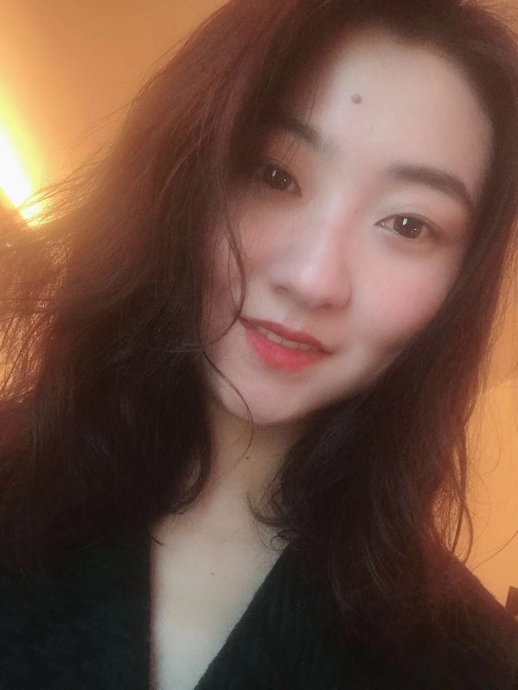
	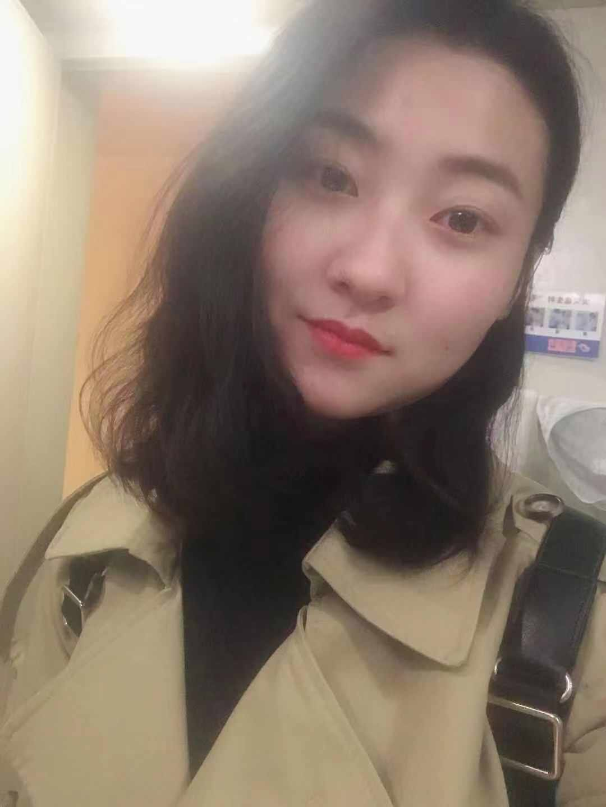
	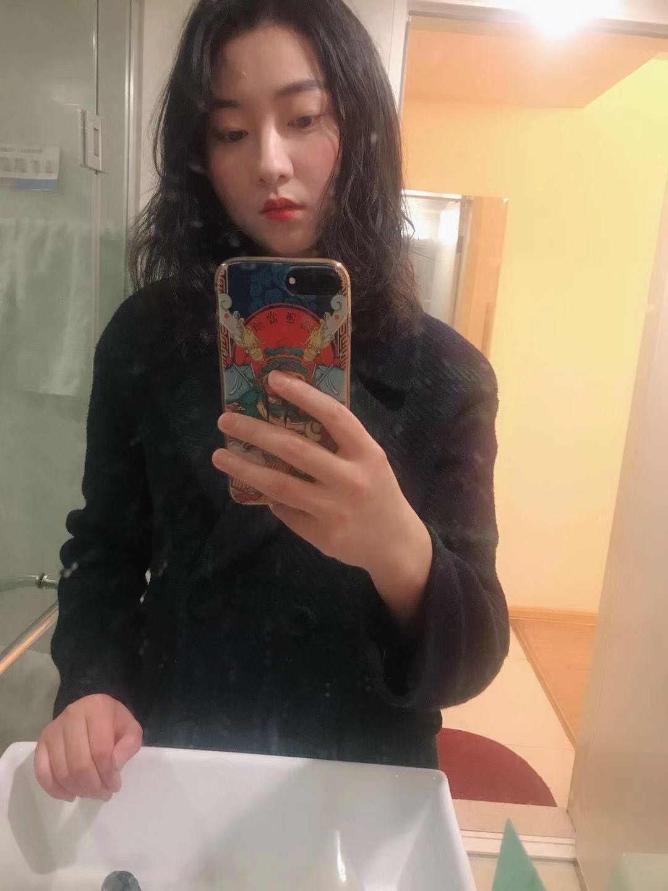
    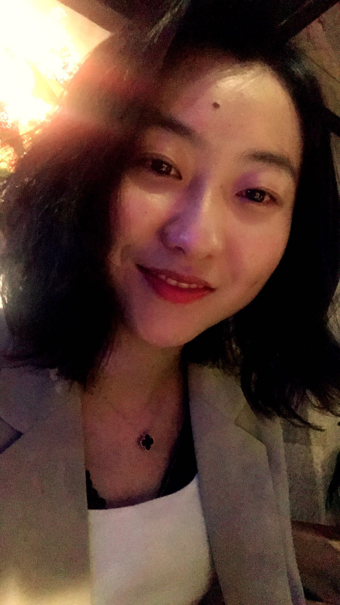
	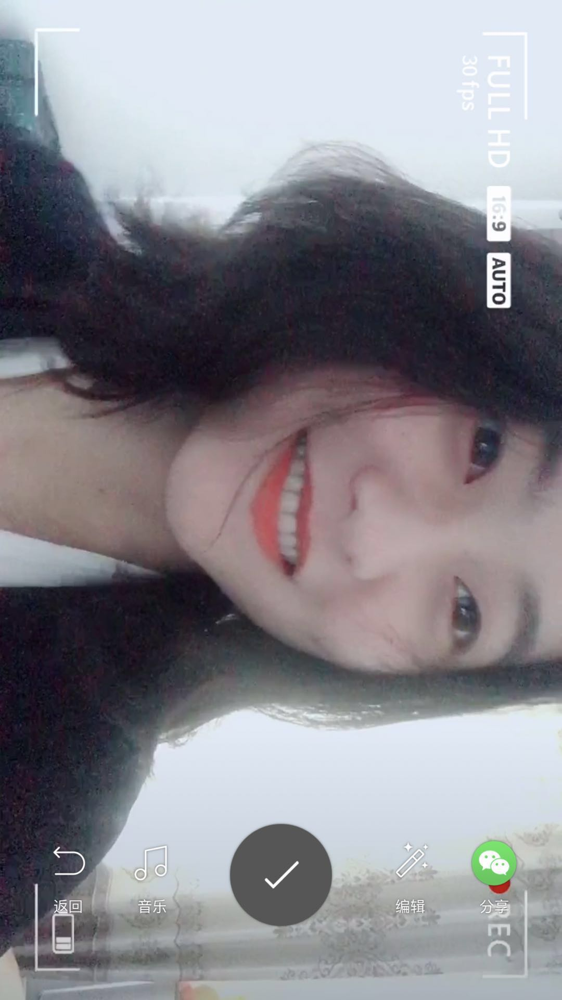
	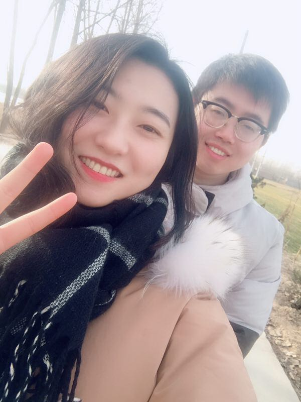
	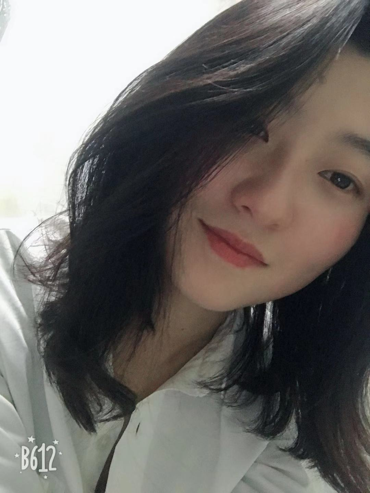
	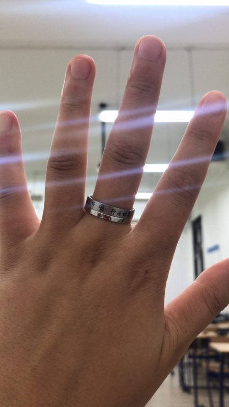
	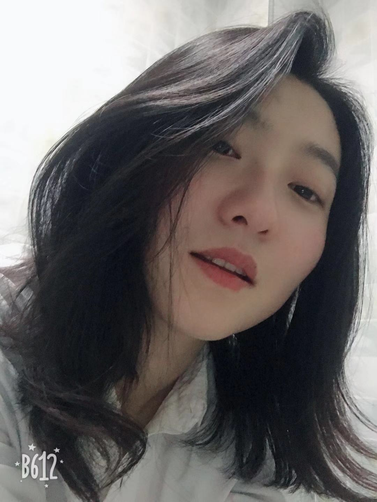
    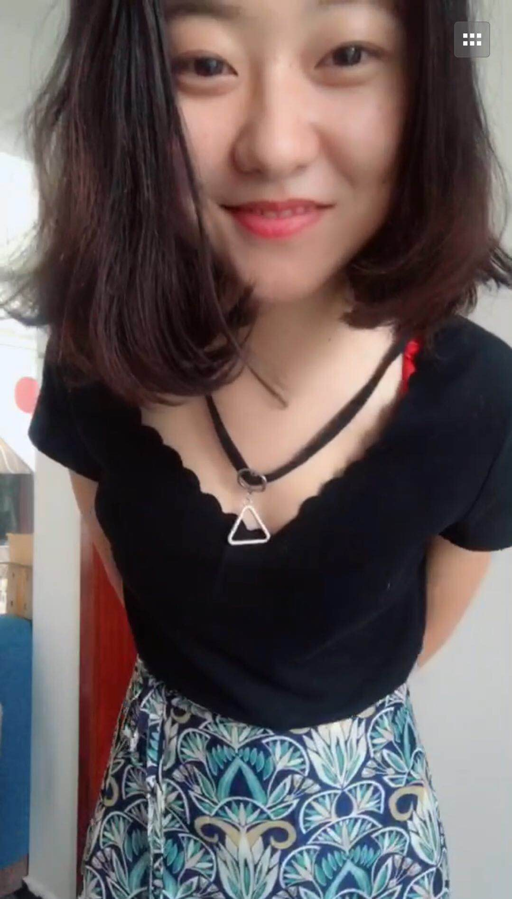
	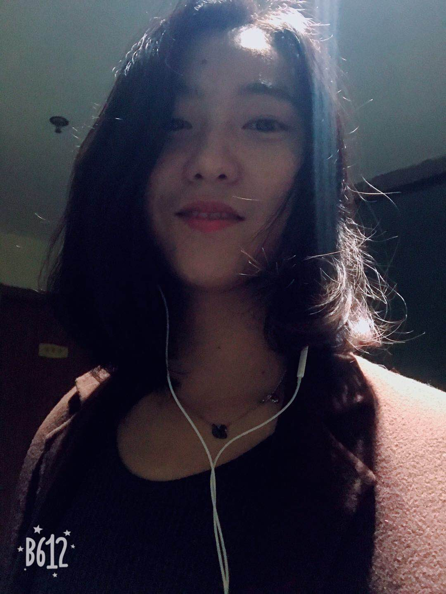
	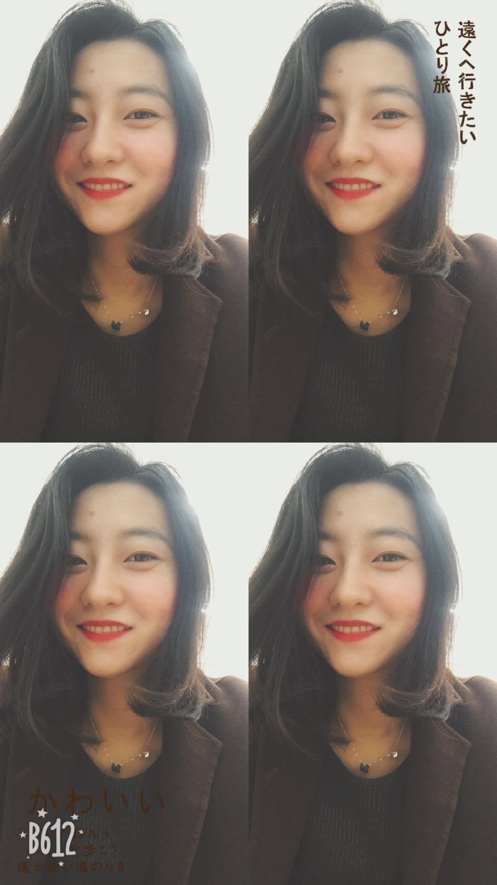
	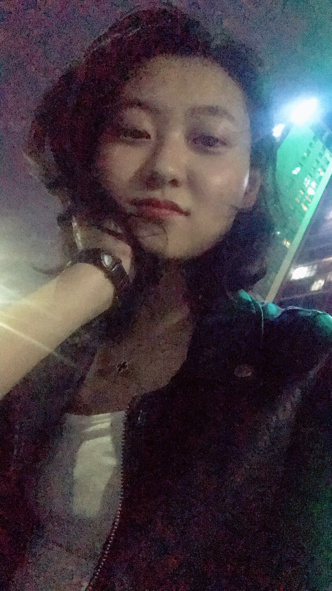 -->
	<p></P>
 </div>
 <div>
 <script type="text/javascript">
 	var MobileSystem=false;
 	GetSystemInf();
 	AddPhoto();
 	// 获取终端设备系统
function GetSystemInf() {
    var u = navigator.userAgent;
    var isAndroid = u.indexOf('Android') > -1 || u.indexOf('Adr') > -1; //android终端
    var isiOS = !!u.match(/\(i[^;]+;( U;)? CPU.+Mac OS X/); //ios终端
    if ((isAndroid) || (isiOS)) {
        MobileSystem = true;
        
    }
}

//循环添加图片
function AddPhoto(){
	var wrap=document.getElementById("wrap");
    for (var i = 0; i < 14; i++) {
    	var img=document.createElement("img");
		img.src="img/"+i+".jpg";
		wrap.appendChild(img);
    }
	
}
			window.onload = function(){
				var oWrap = document.getElementById('wrap');
				var oImg = oWrap.getElementsByTagName('img');
				var oImgLength = oImg.length;
				var Deg = 360 / oImgLength;
				var nowX , nowY , lastX , lastY , minusX = 0, minusY = 0;
				var roY = 0 , roX = -10;
				var timer;

				for ( var i=0;i<oImgLength;i++ )
				{
					oImg[i].style.transform = 'rotateY('+ i*Deg +'deg) translateZ(350px)';
					oImg[i].style.transition = 'transform 1s '+ (oImgLength-1-i)*0.1 +'s';

				}

				mTop();

				window.onresize = mTop;

				function mTop(){
					var wH = document.documentElement.clientHeight;
					oWrap.style.marginTop = wH / 2 - 180 + 'px';
				}
				
				// 拖拽：三个事件-按下 移动 抬起
				//按下
				if(MobileSystem){
					document.ontouchstart = function(ev){
						ev = ev || window.event;
						ev=ev.changedTouches[0];


						//鼠标按下的时候，给前一点坐标赋值，为了避免第一次相减的时候出错
						lastX = ev.clientX;
						lastY = ev.clientY;
						
						//移动
						this.ontouchmove = function(ev){
							ev = ev || window.event;
							
							ev=ev.changedTouches[0];

							clearInterval( timer );

							nowX = ev.clientX; // clientX 鼠标距离页面左边的距离
							nowY = ev.clientY; // clientY ………………………………顶部………………

							//当前坐标和前一点坐标差值
							minusX = nowX - lastX; 
							minusY = nowY - lastY;
							
							//更新wrap的旋转角度，拖拽越快-> minus变化大 -> roY变化大 -> 旋转快
							roY += minusX*0.2; // roY = roY + minusX*0.2;
							roX -= minusY*0.1;
		 
							oWrap.style.transform = 'rotateX('+ roX +'deg) rotateY('+ roY +'deg)';
							
							/*
							//生成div，让div跟着鼠标动
							var oDiv = document.createElement('div');
							oDiv.style.cssText = 'width:5px;height:5px;background:red;position:fixed;left:'+nowX+'px;top:'+nowY+'px';
							this.body.appendChild(oDiv);
							*/
							
							//前一点的坐标
							lastX = nowX;
							lastY = nowY;

						}
						//抬起
						this.ontouchend = function(){
							this.ontouchmove = null;
							timer = setInterval(function(){
								minusX *= 0.95;
								minusY *= 0.95;
								roY += minusX*0.2; // roY = roY + minusX*0.2;
								roX -= minusY*0.1;
								oWrap.style.transform = 'rotateX('+ roX +'deg) rotateY('+ roY +'deg)';

								if ( Math.abs(minusX)<0.1 && Math.abs( minusY )<0.1 )
								{
									clearInterval( timer );
								}
								console.log( minusX );
							},13);
						}
						return false;
					}
				}
				else{
					document.onmousedown = function(ev){
						ev = ev || window.event;
						


						//鼠标按下的时候，给前一点坐标赋值，为了避免第一次相减的时候出错
						lastX = ev.clientX;
						lastY = ev.clientY;
						
						//移动
						this.onmousemove = function(ev){
							ev = ev || window.event;
							
							

							clearInterval( timer );

							nowX = ev.clientX; // clientX 鼠标距离页面左边的距离
							nowY = ev.clientY; // clientY ………………………………顶部………………

							//当前坐标和前一点坐标差值
							minusX = nowX - lastX; 
							minusY = nowY - lastY;
							
							//更新wrap的旋转角度，拖拽越快-> minus变化大 -> roY变化大 -> 旋转快
							roY += minusX*0.2; // roY = roY + minusX*0.2;
							roX -= minusY*0.1;
		 
							oWrap.style.transform = 'rotateX('+ roX +'deg) rotateY('+ roY +'deg)';
							
							/*
							//生成div，让div跟着鼠标动
							var oDiv = document.createElement('div');
							oDiv.style.cssText = 'width:5px;height:5px;background:red;position:fixed;left:'+nowX+'px;top:'+nowY+'px';
							this.body.appendChild(oDiv);
							*/
							
							//前一点的坐标
							lastX = nowX;
							lastY = nowY;

						}
						//抬起
						this.onmouseup = function(){
							this.onmousemove = null;
							timer = setInterval(function(){
								minusX *= 0.95;
								minusY *= 0.95;
								roY += minusX*0.2; // roY = roY + minusX*0.2;
								roX -= minusY*0.1;
								oWrap.style.transform = 'rotateX('+ roX +'deg) rotateY('+ roY +'deg)';

								if ( Math.abs(minusX)<0.1 && Math.abs( minusY )<0.1 )
								{
									clearInterval( timer );
								}
								console.log( minusX );
							},13);
						}
						return false;
					}
				}
				
			}

		</script>
 </body>
</html>
